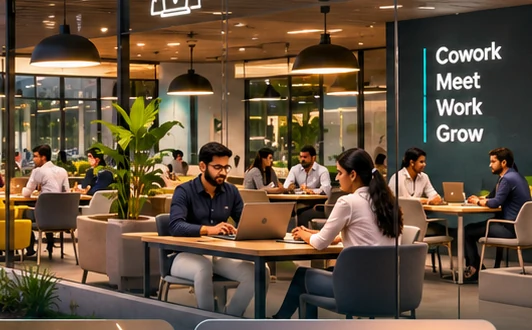
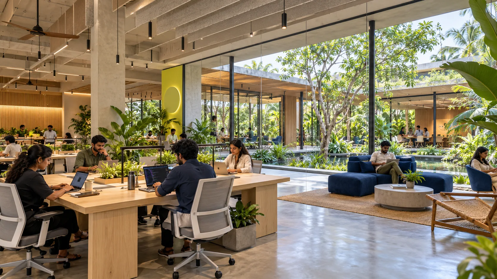
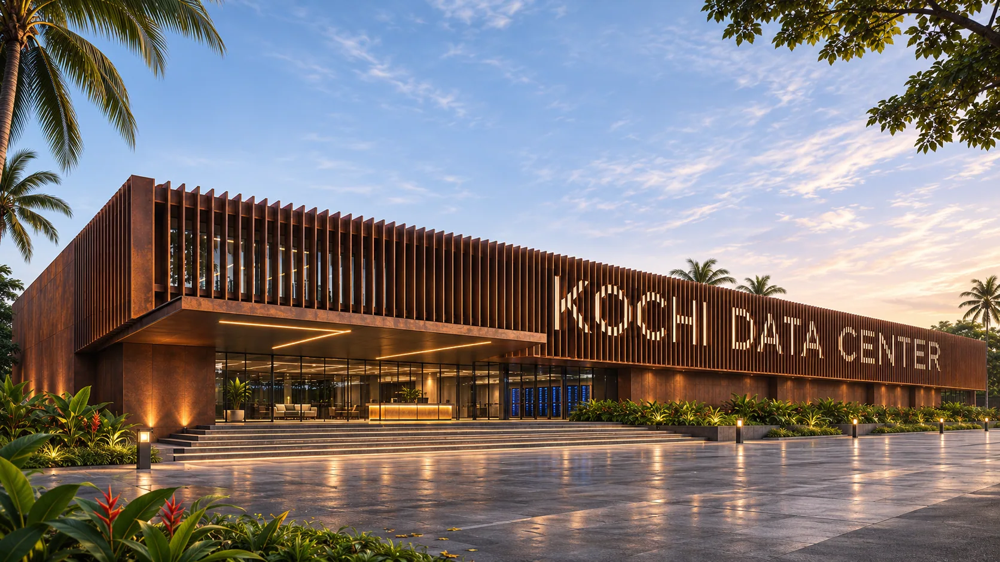
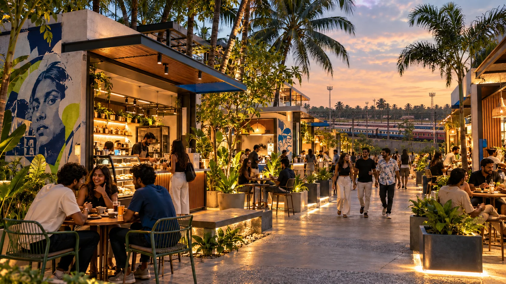
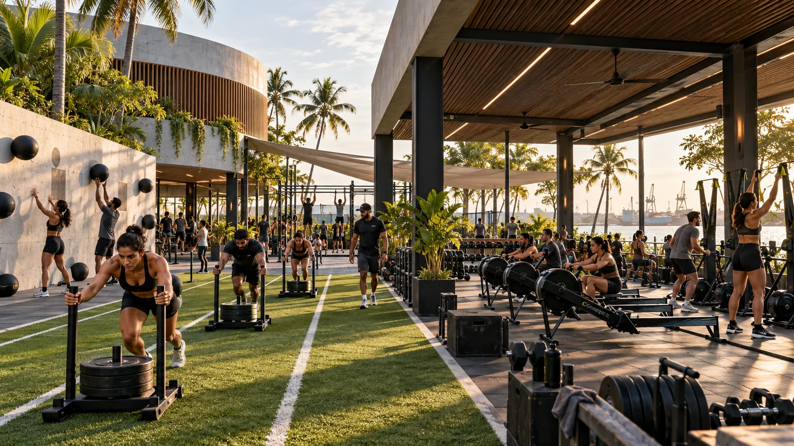
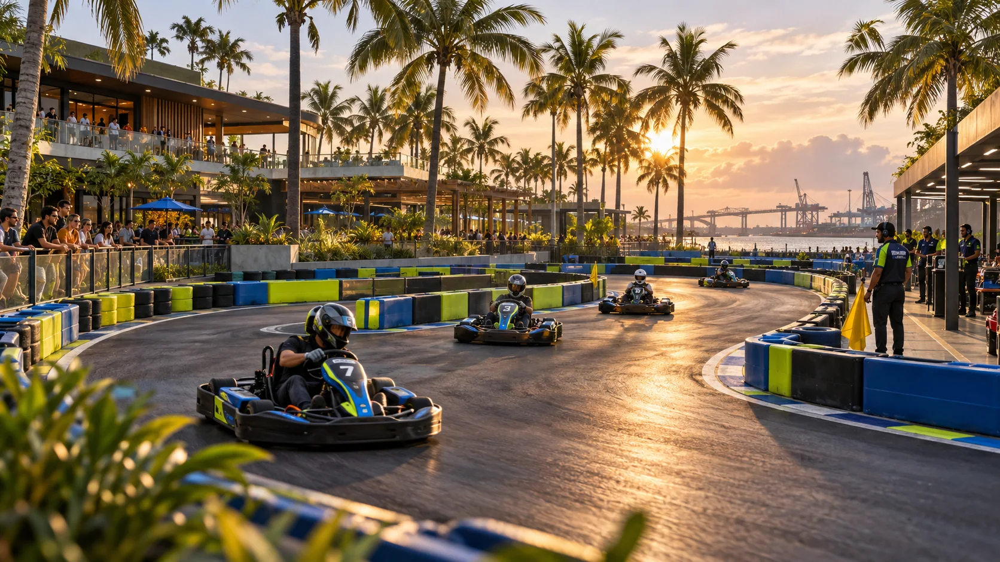
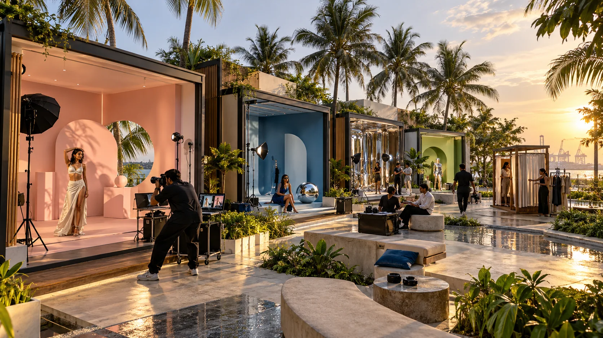

Data centre + coworking + community
Enterprise infrastructure, inspiring workspace and people-first environments designed to power innovation in Kochi.
A more complete vision for Kochi: resilient digital infrastructure, premium coworking space, enterprise-ready workplaces and a lifestyle-led community destination — all positioned within one integrated address.


Enterprise infrastructure, inspiring workspace and people-first environments designed to power innovation in Kochi.
IGNIVA is a proposed integrated technology campus designed around a simple belief: the places powering the digital future should also contribute to the life around them.
Our vision brings together a secure data centre infrastructure and a separate, public-facing district with flexible coworking, enterprise workspace, creativity and community.
Meet the campus ↗Figures reflect preliminary concept assumptions and are subject to land, planning and technical validation.
Designed as two independently operated environments: secure infrastructure at the core, community at the edge.
Separate development concepts and financial underwriting; shared campus positioning does not imply shared public access to secure infrastructure.
A proposed 10 MW data centre structured around a powered-and-cooled shell model, with modular delivery and resilient support infrastructure as design priorities.
Built to serve a potential institutional anchor tenant responsible for its own IT equipment and operations.

Planned modular IT-capacity handover
Target power usage effectiveness (PUE)
Conceptual power and cooling redundancy
Target anchor lease duration
Technical specifications are targets, not certified performance claims. Power sanction, Tier classification, topology and final design require independent verification.
Introducing ISLE CLUB — a proposed five-acre destination where productive work, expressive culture and active living intersect.
From a dedicated coworking and enterprise workspace offering to creator studios, social streets, fitness and family experiences, every visit offers a new reason to stay.




All ISLE CLUB visuals depict illustrative concepts. Activities, areas and specific attractions remain subject to feasibility, permits, commercial validation and detailed masterplanning.
A proposed premium coworking destination within ISLE CLUB, designed for founders, technology teams, independent professionals and growing businesses. An inspiring workplace where focused work meets meaningful connection.
Imagine flexible desks, private offices, enterprise team suites, meeting rooms and collaboration spaces — all part of a connected campus experience.
Explore workspace enquiries ↗Concepts for coworking desks, private team suites and adaptable office space.
Shared meeting spaces, creative exchange and a professional community.
Potential access to cafes, wellness and leisure experiences across the public-facing ISLE district.
Discover the proposed IGNIVA coworking concept and register your interest.
Concept visuals are illustrative, not photographs of an operating IGNIVA facility. Workspace area, mix, amenities and availability remain subject to design, approvals and commercial feasibility. No affiliation with WeWork is implied.
Envisioned in the Bristow Road corridor near Kochi’s port and naval infrastructure, IGNIVA seeks to bring a distinctive digital and community destination to the city.
Explore the area ↗Proposed site context only. Land rights, permitted use, coastal controls, aviation restrictions and planning permissions remain subject to due diligence.
The vision is ambitious. The execution path is deliberate — validate first, commit responsibly, and build with the right partners.
Parcel review, initial feasibility direction and development groundwork completed for current project planning.
Anchor requirements, independent engineering coordination and integrated masterplanning are underway.
Appraisal, EPC structuring and project-commercial alignment are progressing in parallel.
Data-centre delivery planning, modular execution strategy and implementation sequencing are in progress.
Public-facing work, coworking and community experiences continue to be shaped in progressive phases.
We're inviting conversations with prospective anchor tenants, institutional partners, infrastructure specialists and future collaborators.
For coworking or office-space enquiries, data-centre leasing, investment discussions and strategic partnerships, contact the IGNIVA team.
sales@ignivatechisland.comEmail our team ↗We welcome enquiries from prospective tenants, partners and collaborators.